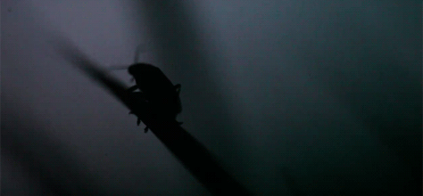
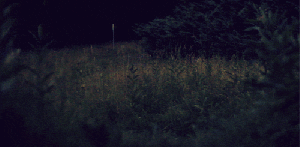

Rádio¶
Interakcia na diaľku vyzerá ako kúzlo.
Kúzlo by si mohol/mohla využiť, ak by si bol(a) elfom, čarodejom alebo jednorožcom, ale takto to funguje iba v rozprávkach.
Ale je tu niečo lepšie ako kúzla: fyzika!
Bezdrôtová interakcia je celá o fyzike: rádiové vlny (typ elektromagnetického žiarenia, podobné ako viditeľné svetlo) majú niektoré vlastnosti (napríklad amplitúdu, fázu alebo vlnovú dĺžku) modulované vysielačom takým spôsobom, že doň môže byť zakódovaná informácia a teda aj vysielaná. Keď sa rádiové vlny stretnú s elektrickým vodičom (t.j. anténa), spôsobia zmenu prúdu, pomocou ktorej vieme extrahovať informáciu z vń a zmeniť ju do jej pôvodného tvaru.
Vrstvy za vrstvami¶
Ak si spomínaš, siete sú postavené vo vrstvách.
Najzákladnejšou požiadavkou na sieť je nejaké spojenie, ktoré umožní signálu dostať sa z jedného zariadenia na druhé. V našom sieťovom návode používame drôty pripojené k I/O pinom. Vďaka rádiovému modulu to môžeme urobiť aj bez drôtov a využiť fyziku, ako sme si vysvetlili už skôr, ako neviditeľné spojenie medzi dvoma zariadeniami.
Ďalšia vrstva vo vrstvách siete je tiež trochu iná ako náš príklad v tomto návode. V príklade s káblami sme používali digitálnu informáciu zapnutý / vypnutý na posielanie a čítanie signálov z pinov. Ak používame vstavané rádio na micro:bite, najmenšou zmysluplnou jednotkou signálu je bajt.
Bajty¶
bajt je jednotka informácie, ktorá (zvyčajne) pozostáva z ôsmych bitov. Bit je najmenšia možná jednotka informácie, keďže má len dva stavy: zapnutý alebo vypnutý.
Bajty fungujú ako počítadlo: každá poloha v bajte je ako stĺpec v počítadle - predstavujú čísla. Na počítadle su zvyajne tisícky, stovky, desiatky a jednotky (vo Veľkej Británii). V bajte sú to 128, 64, 32, 16, 8, 4, 2 and 1. Vzduchom sa síce posielajú bity (zapnutý/vypnutý), no u prijímateľa sa znova poskladajú do bajtov.
Všimol/všimla si si nejaký vzor? (Poradím ti: sú to násobky 2)
Priraďovaním čísel nastavených ako zapnuté alebo vypnuté spojených s určitou pozíciou v bajte, vieme vyjadriť čísla od 0 do 255. Obrázok nižšie ukazuje, ako to funguje s piatimi bitmi a počítaním do 32:

Ak sa dohodneme, čo každé z 255 čísel (zakódovaných do bajtu) predstavuje ~ napríklad znak ~ potom môžeme začať posielať texty ako jeden znak na bajt.
Ľudia už na toto mysleli ~ používanie bajtov na zakódovanie a dekódovanie informácie je úplne bežné. Je to podobné ako „protokol“ Morseovho kódu v príklade s káblovou sieťou.
Veľmi dobré a deťom (aj učiteľom) prístupné vysvetlenie „všetko o bajtoch“ je k dispozícii na webstránke CS unplugged (po anglicky).
Adresovanie¶
Problém s rádion je, že nemôžeš vysielať priamo konkrétnej osobe. Hocikto s vhodnou ant=nou môže prijímať správy, ktoré vysielaš. Preto je dôležité, aby sme vedeli roylíšiť, kto má byť schopný prijímať náš signál.
Spôsob, akým je rádio vstavané do micro:bitu tento problém rieši vcelku jednoducho:
- Rádio je možné naladiť na rôzne kanály (očíslované od 0 do 100). Funguje to presne ako na detských vysielačkách: každý sa naladí na rovnaký kanál a každý počuje, čo všetci vysielajú. Rovnako, ako pri detských vysielačkách, aj tu je malá šanca interferencie, ak použiješ blízke kanály.
- Rádio modul ti umožňuje špecifikovať dva typy informácie: adresu a skupinu. Adresa je ako poštová adresa a skupina je ako konkrétny prijímateľ na danej adrese. Dôležité je mať na pamäti, že rádio odfiltruje správy, ktoré prijalo, no nezodpovedali tvojej adrese a skupine. Dôsledkom toho je, že je veľmi dôležité správne nastaviť, ktorú adresu a skupinu bude tvoja aplikácia používať.
Samozrejme, micro:bit stále prijíma vysielané správy pre ostatné adresy a skupiny. Dôležité však je, že o toto sa nemusíš starať. Ak by však bol dosť šikovný, mohol by čítať všetky správy v bezdrôtovej sieti bez ohľadu na to, pre akú adresu a skupinu sú určené. V takom prípade je dôležité používať iba šifrovanú komunikáciu, aby si správu vedel prečítať iba skutočný adresát. Kryptografia je fascinujúca téma, no žiaľ presahuje rozsah tohto návodu.
Svätojánske mušky¶
Toto je svätojánska muška
Je to druh hmyzu, ktorý využíva svetielkovanie na komunikáciu (bezdrôtovú) so svojimi kamošmi. Takto vyzerajú, keď si navzájom posielajú signály:
BBC má k dispozícii online veľmi pekné video o svätojánskych muškách.
Pomocou rádiového modulu vytvoríme niečo podobné roju svätojánskych mušiek, ktoré navzájom komunikujú.
Na začiatok importuj rádiový modul pomocou import radio, aby si mohol/mohla používať tieto funkcie vo svojom programe. Potom zavolaj funkciu radio.on(), abz sa rádio zaplo. Keďže rádio spotrebováva energiu aj pamäť, urobili sme to tak, aby si ty rozhodol/rozhodla, kedy je zapnuté (samozrejme existuje aj funkcia radio.off(), ktorá ho vypne).
Teraz má rádio nastavené zmysluplné predvolené nastavenia, vďaka ktorým je kompatibilné s inými platformami, ktoré môžu komunikovať s tvojím micro:bitom. Môžeme ovládať množstvo vlastností, ktoré sme spomenuli už skôr (napríklad kanály a adresovanie) a tiež aj množstvo energie, ktorá sa použije na vysielanie správ a množstvo RAM, ktorá sa využije na uchovanie prichádzajúcich správ. API dokumentácia obsahuje všetky informácie potrebné na konfiguráciu rádia podľa tvojich potrieb.
Ak predpokladáme, že nám vyhovujú predvolené nastavenia, najjednoduchší spôsob, ako poslať správu je:
radio.send("a message")
Príklad používa funkciu send na jednoduché odoslanie reťazca „a message“ (správa). Prijať správu je ešte jednoduchšie:
new_message = radio.receive()
Správy sa po prijatí radia do poradia. Funkcia receive (prijímať) vráti ako reťazec najstaršiu správu z poradia a tým uvoľní miesto pre novú prichádzajúcu správu. Ak sa poradie zaplní, nové správy budú ignorované.
To už je k tomu naozaj všetko! (Aj keď rádio modul je dostatočne vybavený na to, aby si s ním posielal(a) akýkoľvek typ dát, nie len reťazce. Pre viac informácii o tom, ako to funguje, pozri API dokumentáciu.)
Vyzbrojení týmito znalosťami teraz takto ľahko vyrobíme micro:bitové svätojánske mušky:
# A micro:bit Firefly.
# By Nicholas H.Tollervey. Released to the public domain.
import radio
import random
from microbit import display, Image, button_a, sleep
# Create the "flash" animation frames. Can you work out how it's done?
flash = [Image().invert()*(i/9) for i in range(9, -1, -1)]
# The radio won't work unless it's switched on.
radio.on()
# Event loop.
while True:
# Button A sends a "flash" message.
if button_a.was_pressed():
radio.send('flash') # a-ha
# Read any incoming messages.
incoming = radio.receive()
if incoming == 'flash':
# If there's an incoming "flash" message display
# the firefly flash animation after a random short
# pause.
sleep(random.randint(50, 350))
display.show(flash, delay=100, wait=False)
# Randomly re-broadcast the flash message after a
# slight delay.
if random.randint(0, 9) == 0:
sleep(500)
radio.send('flash') # a-ha
Import sa udeje v cykle. Najskôr skontroluje, či bolo stlačené tlačítko A a ak bolo, použije rádio na odoslanie správy „blik“. Potom číta správy z poradia pomocou radio.receive(). Ak je tam správa, chvíľku počká - dĺžka čakania je náhodná, aby displej vyzeral zaujímavejšie a potom pomocou display.show() animuje blikanie svätojánskej mušky. Nakoniec, aby to celé bolo trochu zábavnejšie, vyberie si náhodné číslo tak, aby bola šanca 1 ku 10, že správu (blik) pošle niekomu ďalšiemu (takto je možné udržať „svätojánsky“ displej medzi viacerými zariadeniami). Ak sa rozhodne správu preposlať, počká pol sekundy (takže displej z pôvodného bliku stihne stmavnúť) a potom pošle signál znova. Keďže tento kód je uzavretý v bloku while True (=opakuj kým platí, že pravda je pravdivá), vráti sa potom späť na začiatok cyklu a opakuje tento proces donekonečna.
Výsledok (s použitím skupiny micro:bitov) by mal vyzerať takto nejako: